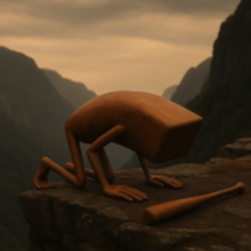
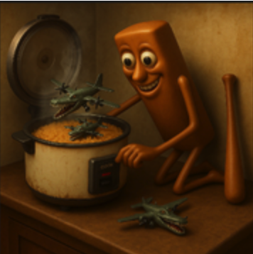
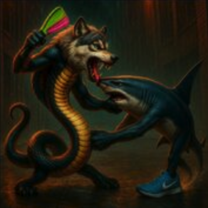
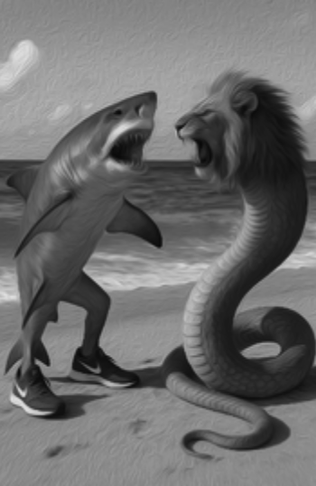

Italian Brainrot
tung tung tung tung tung tung tung tung tung sahur, a terrifying anomaly that only appears during sahur, it is said that if someone is called for sahur 3 times and does not answer, then this creature comes to your house. Ewww, the scary thing is, this tung tung usually makes a sound like a gong like this, tung tung tung tung tung tung tung. Share it with your friends who have trouble eating sahur
Trallallero Trallallà possesses fast running speeds, cloning abilities (thanks to his regenerative powers), outstanding jaw strength, and exceptional jumping abilities.The battle between Tung Tung Sahur and Brr Brr Patapim is one of the most studied yet least understood incidents in history. Though brief, the encounter had lasting consequences, and is now referenced in a range of textbooks.
At the beginning of the fight, Tung Tung Sahur stands tall (150in) before Brr Brr Patapim, who is already half-sunk into the forest floor. As Sahur begins his advance, swinging his bat behind him, Patapim roots into the ground with both arms, instantly vanishing below. Before Sahur can react, the forest floor opens. He drops down. Hi bat remains behind, humming. Patapim emerges calmly and Slowly. He picks up Sahur’s bat and inspects it. But before anything further can unfold, Sahur respawns behind Patapim and Patapim returns the bat. Then, Tung Tung Tung Sahur becomes Muscular Sahur (also known as Sahur Max Form). In a blur, Sahur delivers a flawless flurry of kicks, landing five consecutive hits . Patapim is knocked back and he lifts a hand. The fight ends in a draw.
Tung Tung Sahur Vs. Bombardino Crocodilo
During the short peace after the Second War, Bombardiro Crocodilo got bored and decided to recreate 16 Lesser Crocos using scraps from the original Bombardiro factory.
These 16 Lesser Crocos were made from expired uranium, and crocodile spit. They were sent to hunt down Tung Tung Tung Sahur who was last seen haunting a mosque in Vladivostok owned by Spaghetto Deseto.

Tung Tung Sahur performing the sujuds that called in the monsoon killing billions

Artists impression of Sahur cooking lesser crocos like rice
The Crocos thought maybe 16 would be enough. But no. Sahur ate the first 8. Literally ate them. Put them in a rice cooker with cumin and waited 10 minutes. The other 8 tried to hide in a Pot Hotspot router but failed.
Mid-fight, Pot Hotspot tried to livestream the fight, received 4 viewers and then was vac-banned instantly.
Bombardiro Crocodilo showed up 2 days later riding a horse. Sahur said nothing, only did 3 consecutive sujuds that summoned a monsoon in Libya killing billions. The two then fought for 14 seconds. Sahur was immune to all Bombardiro’s explosives, even the forbidden one that was banned after the Trippi Troppi bloating incident. Sahur kicked him into a nearby synagogue, where a Rabbi blessed Bombardino and told him to go home.
Tung Tung Sahur vs. Piccione Macchina
(redacted) This entry is unavailable due to section 1.4.8 of the international brainrot secrecy agreement.
Outcome : 420 of Unknown number of Tung tung Sahurs Eliminated (later revealed to be a glitch entity)
Gorillardo Mazzuoloni Versus Tung tung sahur
In the twilight of the Sahuran calendar, after centuries of devotion had rotted into apathy, the sacred Sahur call—meant to awaken the faithful for their pre-dawn meal—was ignored. Not once. Not twice. Three times. Humanity scrolled past the hour. Alarms were snoozed. Ovens stayed cold. And in that silence, a tremor echoed from the cosmic archives. The old pact had been broken. And so he returned: the final enforcer of the forgotten rites, the last of his kind—Tung Tung Tung Tung Tung Tung Tung Tung Tung Sahur. Not a man. Not a god. But a sentient, ancient wooden Sahuran bat, forged from truth-trees grown under fasting moons, carved by monks who never slept. His purpose was singular: strike those who disobey the call. A thousand years of stillness cracked as he hovered into the Earthly plane. Carved into his spine were the names of every soul who had heeded the call. His silence meant justice. His strike meant judgment. But far to the west, deep within the banana-soaked ruins of Bananaccia sul Fosso, something primal stirred. Gorillardo Mazzuoloni, once a fruit vendor, now a creature born from a cursed banana and divine rage, sensed the rupture. His breath steamed with potassium. His weapon—the Mazzuola—was already humming. One did not silence Sahur without drawing his wrath. And one did not swing at Gorillardo without preparing to die.
The field was ash. Broken minarets jutted from the earth like the ribs of forgotten giants. Above, the sky flickered between moons and clocks. Sahur arrived first, floating just above ground, his bat-body humming with holy heat. With calm precision, he struck the air. “TUNG.” The air rippled. “TUNG.” The clouds split. “TUNG.” The world froze. The final call had been issued. But there was no awakening. Only Gorillardo, who dropped from orbit like a meteor, his body landing with an earthquake, banana peels scattering from his fur like confetti. He stood tall, massive, eyes burning, Mazzuola dragging behind him with the weight of judgment. He growled. “OOH.” The wind recoiled. “AAH AAH OOH AAAAAHHHHHH!” He lunged. The Mazzuola came down like a collapsing building, but Sahur dodged it with preternatural grace, spinning mid-air and slamming into Gorillardo’s ribs with a glowing crack. “TUNG!” The hit sent Gorillardo flying backwards, crashing through three centuries and landing in a future ruled by bread. He roared, time-snapped back to the battlefield, bleeding from his chest. “AAAH AAHHHHHH!” He struck again, this time feinting low then swinging high, catching Sahur mid-spin. Sparks exploded. Sahur retaliated instantly, battering Gorillardo’s jaw, elbows, and spine in a flurry of wooden fury. “TUNG. TUNG. SAHUR.” Each strike glowed with purpose, cracking fur, bone, and faith. Gorillardo screamed in pain—his vision blurred, his grip on the Mazzuola faltering. For a moment, it seemed the bat would win. Sahur soared into the sky, twirling like the crescent of justice, preparing the final blow. But Gorillardo, bloodied and feral, caught his breath. He locked eyes with the bat, let out a final roar that shattered six satellites: “OOH OOH OOH AAH AAH
AAAAAAAHHHHHHHHHHHHHHHH!” and hurled the Mazzuola like a divine javelin. It struck Sahur mid-flight. The bat screamed—“SAHUR!!”—and spiraled downward. Gorillardo caught him mid-air, twisted, and brought him down back-first over his knee. A sound like the end of prayer echoed. Sahur’s wooden spine splintered, fragments flying like desperate birds. Gorillardo didn’t stop. He raised the Mazzuola one last time and smashed it down on Sahur’s center, breaking him clean in two. Sawdust scattered like incense. One final, faint “...tung...” echoed through the dust. The bat was broken. Holy no more. Gorillardo stood, hunched and shaking, his own blood coating the shattered relic in his hand. He had won. But only barely. He fell to one knee, coughed banana pulp, and whispered the only word the stars understood: “...OOH.”
It was later found out that sahur was buried directly under the battle ground in which this fought took place. Inside of sahur's signature bat was a single seed found right next to where he was. We believe this to be a method on how to revive sahur. However, we are still running tests on it.
Croco-Avian Wars
Trallallero Trallallà was allied with the crocos in both Croco-Avian wars. However, he couldn't contribute much because of the aerial nature of most of their enemies. He did take out one important enemy commander in the first war, which greatly helped the crocos win. Rumor states that in the second war, Tralelo will save the crocos from imminent defeat by assassinating Bombombini Gusini by climbing into his engines. However, this was anticipated and Tralalero was caught by a group of Bengali Fishermen (led by Roshogulla Hasimollah) over the pre-planned ocean route Bombombini Gusini would intentionally fly. He was then incinerated by Rantasanta Chinaranta and consumed by the fishermen. There is rumors of the Cybertruck Assassins Involvment in Tralalero tralala's success in the second war. But all information on the matter has long been redacted. There were, however, reported sightings of Piccione Macchina in the skies that day, boosting the credibility of the theory, claiming some sort of cooperation between the Cybertruck Assassins and Tralalero Tralala took place that day.
Yemeni-Jabad Wars
The battle commenced as Gattino Aereoplanino confronted Dangerito Bearito. Dangerito Bearito stood defiantly while Gattino opened fire. As Tralalero grappled with Dangerito Bearito, attempting a kill shot with a rocket bullet, Gattino struck Dangerito Bearito's head. Tralalero narrowly dodged the resulting blast, cheating death as the explosion erupted. Astonishingly, Dangerito Bearito survived the onslaught. Gattino fired again, only for Dangerito Bearito to retaliate, launching himself at Gattino with destructive intent. Amidst the chaos, Tralalero Tralala planted C-4 on Dangerito Bearito's back. A second, devastating explosion ripped through the air, yet Dangerito Bearito, impossibly, endured once more before finally withdrawing from the battlefield.
Indi-Italian Wars
Naagnaath Wolfender vs Tralalelo Tralala

Siddy Sussy Gopi Snarky vs Tralalelo Tralala
Siddy Sussy Gopi Snarky engaged in an epic battle with Tralalero Tralala. In the battle, he faced off Siddy Sussy Gopi Snarky in a sumo wrestling match. With his fast speed and jumping abilities he was able to evade his attacks. He tried to escape, but Siddy Sussy Gopi Snarky decided to use his dementia, slowing down his escape. When iddy Sussy Gopi Snarky started to sing "Thick of It" by KSI, he was stunned by the brainrot. This gave Siddy Sussy Gopi Snarky a much needed break, allowing him to summon the Super Sussys.
Donkey VS Shark War
Tralalero Tralala sided with Legeni Peshkaqeni from the beginning as soon as he called for help. He stayed by his side until the final battle, where he was forced to retreat due to losing to Lirili Larila. Overall, he didn't do much except defend Legeni.
Tralalero Tralala vs. Demiurge

Moments before the beginning of the fight, captured in oil painting on 912 AD, in the morning.
This fight was proposed in 912 AD, Demiurge was infuriated with Tralalero Tralala dancing Maracatu everyday infront of his divine palace, so Demiurge offered a battle against Tralalero Tralala, if Tralalero lost, he would stop blaspheming his home and be banished from existence, however, if Demiurge lose, Tralalero would be able to keep dancing Maracatu and live his life. On the last seconds of the battle, Tralalero managed to win using his Nike shoes to kick his foe in the face, which saved his existence, Demiurge, humbly
Bombardiro Crocodino Bangalore is a private garden founded in the Indian city of Bangalore in early 2025. The garden was founded by the Vihaan Triaxis and is not intended for public use except to those who attend the "V.N.S. education trust: (V.N.S. not having any confirmed full form). The site is located in the north of the city and non-canon mysterious activities have been said to take place during the midnight hours of 3:00 to 4:00 A.M. The B.C.D. Ltd. is open for public reviewing and only encourages positive comments, all those negative comments discouraging Bombardiro and promoting the so called transgenic marine/Nike Sneakers organism "Tralalero Tralala" will indeed be punished.